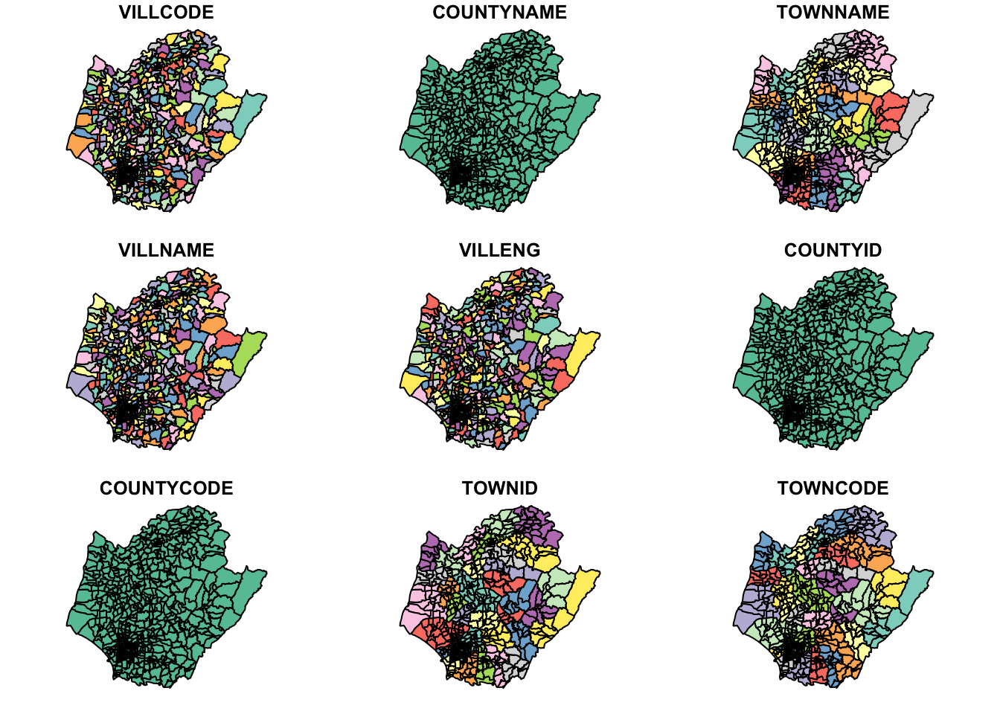

pacman::p_load(sf, spNetwork, tmap, classInt, viridis, tidyverse, list, arrow, lubridate, tidyverse, readr, sp, maptools, raster, spatstat, spdep, readr)Take Home Exercise 2
Overview
Setting the Scene
Dengue Hemorrhagic Fever (in short dengue fever) is one of the most widespread mosquito-borne diseases in the most tropical and subtropical regions. It is an acute disease caused by dengue virus infection which is transmitted by female Aedes aegypti and Aedes albopictus mosquitoes. In 2015, Taiwan had recorded the most severe dengue fever outbreak with more than 43,000 dengue cases and 228 deaths. Since then, the annual reported dengue fever cases were maintained at the level of not more than 200 cases. However, in 2023, Taiwan recorded 26703 dengue fever cases. Figure below reveals that more than 25,000 cases were reported at Tainan City.
Figure 2 and 3 below reveal that more than 80% of the reported dengue fever cases occurred in the month August-November 2023 and epidemiology week 31-50.
Objectives
As a curious geospatial analytics green horn, you are interested to discover:
if the distribution of dengue fever outbreak at Tainan City, Taiwan are independent from space and space and time. If the outbreak is indeed spatial and spatio-temporal dependent, then, you would like to detect where are the clusters and outliers, and the emerging hot spot/cold spot areas.
The Task
The specific tasks of this take-home exercise are as follows:
Using appropriate function of sf and tidyverse, preparing the following geospatial data layer: a study area layer in sf polygon features. It must be at village level and confined to the D01, D02, D04, D06, D07, D08, D32 and D39 counties of Tainan City, Taiwan. a dengue fever layer within the study area in sf point features. The dengue fever cases should be confined to epidemiology week 31-50, 2023. a derived dengue fever layer in spacetime s3 class of sfdep. It should contain, among many other useful information, a data field showing number of dengue fever cases by village and by epidemiology week. Using the extracted data, perform global spatial autocorrelation analysis. Using the extracted data, perform local spatial autocorrelation analysis. Using the extracted data, perform emerging hotspot analysis. Describe the spatial patterns revealed by the analysis above.
The Data
For the purpose of this take-home exercise, two data sets are provided, they are:
TAIWAN_VILLAGE_2020, a geospatial data of village boundary of Taiwan. It is in ESRI shapefile format. The data is in Taiwan Geographic Coordinate System. (Source: Historical map data of the village boundary: TWD97 longitude and latitude)
Dengue_Daily.csv, an aspatial data of reported dengue cases in Taiwan since 1998. (Source: Dengue Daily Confirmed Cases Since 1998. Below are selected fields that are useful for this study:
發病日: Onset date 最小統計區中心點X: x-coordinate 最小統計區中心點Y: y-coordinate Both data sets have been uploaded on eLearn. Students are required to download them from eLearn.
Getting Started
Data Acquisition
| Dataset Name | Source |
| TAIWAN_VILLAGE_2020 | Historical map data of the village boundary: TWD97 longitude and latitude |
| Dengue_Daily.csv | Dengue Daily Confirmed Cases Since 1998 |
Installing and Loading Packages
Lets install the relevant R libraries needed using pacman.
Setting Important Configurations
folderToSave <- "/Users/maarunipandithurai/Documents/maars202/geospatial/IS415-GAA/data/rds"currentdirec = list.files(path="../../data/takehomeassigment2/geospatial", pattern=NULL, all.files=FALSE,
full.names=FALSE)
currentdirec[1] "README.md" "T_TOWN_2020.jpg" "T_VILLAGE_2020.jpg"
[4] "TAINAN_VILLAGE.cpg" "TAINAN_VILLAGE.dbf" "TAINAN_VILLAGE.prj"
[7] "TAINAN_VILLAGE.qmd" "TAINAN_VILLAGE.shp" "TAINAN_VILLAGE.shx"Reading the grab aspatial data:
dengue_df <- read_csv("../../data/takehomeassigment2/aspatial/Dengue_Daily.csv")
dengue_df# A tibble: 106,861 × 26
發病日 個案研判日 通報日 性別 年齡層 居住縣市 居住鄉鎮 居住村里
<date> <chr> <date> <chr> <chr> <chr> <chr> <chr>
1 1998-01-02 None 1998-01-07 男 40-44 屏東縣 屏東市 None
2 1998-01-03 None 1998-01-14 男 30-34 屏東縣 東港鎮 None
3 1998-01-13 None 1998-02-18 男 55-59 宜蘭縣 宜蘭市 None
4 1998-01-15 None 1998-01-23 男 35-39 高雄市 苓雅區 None
5 1998-01-20 None 1998-02-04 男 55-59 宜蘭縣 五結鄉 None
6 1998-01-22 None 1998-02-19 男 20-24 桃園市 蘆竹區 None
7 1998-01-23 None 1998-02-02 男 40-44 新北市 新店區 None
8 1998-01-26 None 1998-02-19 女 65-69 台北市 北投區 None
9 1998-02-11 None 1998-02-13 女 25-29 台南市 南區 None
10 1998-02-16 None 1998-02-24 男 20-24 高雄市 楠梓區 None
# ℹ 106,851 more rows
# ℹ 18 more variables: 最小統計區 <chr>, 最小統計區中心點X <chr>,
# 最小統計區中心點Y <chr>, 一級統計區 <chr>, 二級統計區 <chr>,
# 感染縣市 <chr>, 感染鄉鎮 <chr>, 感染村里 <chr>, 是否境外移入 <chr>,
# 感染國家 <chr>, 確定病例數 <dbl>, 居住村里代碼 <chr>, 感染村里代碼 <chr>,
# 血清型 <chr>, 內政部居住縣市代碼 <chr>, 內政部居住鄉鎮代碼 <chr>,
# 內政部感染縣市代碼 <chr>, 內政部感染鄉鎮代碼 <chr>Getting Columns of dengue_df:
names(dengue_df) [1] "發病日" "個案研判日" "通報日"
[4] "性別" "年齡層" "居住縣市"
[7] "居住鄉鎮" "居住村里" "最小統計區"
[10] "最小統計區中心點X" "最小統計區中心點Y" "一級統計區"
[13] "二級統計區" "感染縣市" "感染鄉鎮"
[16] "感染村里" "是否境外移入" "感染國家"
[19] "確定病例數" "居住村里代碼" "感染村里代碼"
[22] "血清型" "內政部居住縣市代碼" "內政部居住鄉鎮代碼"
[25] "內政部感染縣市代碼" "內政部感染鄉鎮代碼"Lets print a summary of dengue_df to find the data distribution and other info:
summary(dengue_df[]) 發病日 個案研判日 通報日
Min. :1998-01-02 Length:106861 Min. :1998-01-07
1st Qu.:2014-10-28 Class :character 1st Qu.:2014-10-31
Median :2015-09-29 Mode :character Median :2015-10-01
Mean :2016-03-31 Mean :2016-04-03
3rd Qu.:2023-06-19 3rd Qu.:2023-06-23
Max. :2024-01-29 Max. :2024-01-29
性別 年齡層 居住縣市 居住鄉鎮
Length:106861 Length:106861 Length:106861 Length:106861
Class :character Class :character Class :character Class :character
Mode :character Mode :character Mode :character Mode :character
居住村里 最小統計區 最小統計區中心點X 最小統計區中心點Y
Length:106861 Length:106861 Length:106861 Length:106861
Class :character Class :character Class :character Class :character
Mode :character Mode :character Mode :character Mode :character
一級統計區 二級統計區 感染縣市 感染鄉鎮
Length:106861 Length:106861 Length:106861 Length:106861
Class :character Class :character Class :character Class :character
Mode :character Mode :character Mode :character Mode :character
感染村里 是否境外移入 感染國家 確定病例數
Length:106861 Length:106861 Length:106861 Min. :1
Class :character Class :character Class :character 1st Qu.:1
Mode :character Mode :character Mode :character Median :1
Mean :1
3rd Qu.:1
Max. :2
居住村里代碼 感染村里代碼 血清型 內政部居住縣市代碼
Length:106861 Length:106861 Length:106861 Length:106861
Class :character Class :character Class :character Class :character
Mode :character Mode :character Mode :character Mode :character
內政部居住鄉鎮代碼 內政部感染縣市代碼 內政部感染鄉鎮代碼
Length:106861 Length:106861 Length:106861
Class :character Class :character Class :character
Mode :character Mode :character Mode :character
We need to retrieve the coastal outline of Taiwan village so that we are able to fetch the dengue infections specifically within these boundaries.
taiwan_sf <- st_read(dsn = "../../data/takehomeassigment2/geospatial", layer="TAINAN_VILLAGE")Reading layer `TAINAN_VILLAGE' from data source
`/Users/maarunipandithurai/Documents/maars202/geospatial/IS415-GAA/data/takehomeassigment2/geospatial'
using driver `ESRI Shapefile'
Simple feature collection with 649 features and 10 fields
Geometry type: POLYGON
Dimension: XY
Bounding box: xmin: 120.0269 ymin: 22.88751 xmax: 120.6563 ymax: 23.41374
Geodetic CRS: TWD97taiwan_sfSimple feature collection with 649 features and 10 fields
Geometry type: POLYGON
Dimension: XY
Bounding box: xmin: 120.0269 ymin: 22.88751 xmax: 120.6563 ymax: 23.41374
Geodetic CRS: TWD97
First 10 features:
VILLCODE COUNTYNAME TOWNNAME VILLNAME VILLENG COUNTYID COUNTYCODE
1 67000280002 臺南市 歸仁區 六甲里 Liujia Vil. D 67000
2 67000350032 臺南市 安南區 青草里 Qingcao Vil. D 67000
3 67000150009 臺南市 七股區 溪南里 Xinan Vil. D 67000
4 67000150010 臺南市 七股區 七股里 Qigu Vil. D 67000
5 67000150008 臺南市 七股區 龍山里 Longshan Vil. D 67000
6 67000150017 臺南市 七股區 中寮里 Zhongliao Vil. D 67000
7 67000150004 臺南市 七股區 篤加里 Dujia Vil. D 67000
8 67000150007 臺南市 七股區 塩埕里 Yancheng Vil. D 67000
9 67000150022 臺南市 七股區 三股里 Sangu Vil. D 67000
10 67000150023 臺南市 七股區 十份里 Shifen Vil. D 67000
TOWNID TOWNCODE NOTE geometry
1 D33 67000280 <NA> POLYGON ((120.2725 22.95868...
2 D06 67000350 <NA> POLYGON ((120.1176 23.08387...
3 D22 67000150 <NA> POLYGON ((120.121 23.1355, ...
4 D22 67000150 <NA> POLYGON ((120.1312 23.1371,...
5 D22 67000150 <NA> POLYGON ((120.0845 23.13503...
6 D22 67000150 <NA> POLYGON ((120.126 23.16917,...
7 D22 67000150 <NA> POLYGON ((120.1585 23.15376...
8 D22 67000150 <NA> POLYGON ((120.0636 23.17069...
9 D22 67000150 <NA> POLYGON ((120.0422 23.11545...
10 D22 67000150 <NA> POLYGON ((120.1201 23.09364...plot(taiwan_sf)
According to https://epsg.io/3826, the EPSG code for taiwan to be used as the coordinate system is 3826. Thus, the data has been projected to Taiwan’s coordinate system using 3826.
# find location of missing values
print("Position of missing values ")[1] "Position of missing values "which(is.na(dengue_df))integer(0)# count total missing values
print("Count of total missing values ")[1] "Count of total missing values "sum(is.na(dengue_df))[1] 0colSums(is.na(dengue_df)) 發病日 個案研判日 通報日 性別
0 0 0 0
年齡層 居住縣市 居住鄉鎮 居住村里
0 0 0 0
最小統計區 最小統計區中心點X 最小統計區中心點Y 一級統計區
0 0 0 0
二級統計區 感染縣市 感染鄉鎮 感染村里
0 0 0 0
是否境外移入 感染國家 確定病例數 居住村里代碼
0 0 0 0
感染村里代碼 血清型 內政部居住縣市代碼 內政部居住鄉鎮代碼
0 0 0 0
內政部感染縣市代碼 內政部感染鄉鎮代碼
0 0 dengue_df[6,]$最小統計區中心點X[1] "None"dengue_df_filtered <- filter(dengue_df, 最小統計區中心點X != "None" & 最小統計區中心點Y != "None")
dengue_df_filtered# A tibble: 106,081 × 26
發病日 個案研判日 通報日 性別 年齡層 居住縣市 居住鄉鎮 居住村里
<date> <chr> <date> <chr> <chr> <chr> <chr> <chr>
1 1998-01-02 None 1998-01-07 男 40-44 屏東縣 屏東市 None
2 1998-01-03 None 1998-01-14 男 30-34 屏東縣 東港鎮 None
3 1998-01-13 None 1998-02-18 男 55-59 宜蘭縣 宜蘭市 None
4 1998-01-15 None 1998-01-23 男 35-39 高雄市 苓雅區 None
5 1998-01-20 None 1998-02-04 男 55-59 宜蘭縣 五結鄉 None
6 1998-01-23 None 1998-02-02 男 40-44 新北市 新店區 None
7 1998-01-26 None 1998-02-19 女 65-69 台北市 北投區 None
8 1998-02-11 None 1998-02-13 女 25-29 台南市 南區 None
9 1998-02-16 None 1998-02-24 男 20-24 高雄市 楠梓區 None
10 1998-02-17 None 1998-02-23 女 30-34 高雄市 鳳山區 None
# ℹ 106,071 more rows
# ℹ 18 more variables: 最小統計區 <chr>, 最小統計區中心點X <chr>,
# 最小統計區中心點Y <chr>, 一級統計區 <chr>, 二級統計區 <chr>,
# 感染縣市 <chr>, 感染鄉鎮 <chr>, 感染村里 <chr>, 是否境外移入 <chr>,
# 感染國家 <chr>, 確定病例數 <dbl>, 居住村里代碼 <chr>, 感染村里代碼 <chr>,
# 血清型 <chr>, 內政部居住縣市代碼 <chr>, 內政部居住鄉鎮代碼 <chr>,
# 內政部感染縣市代碼 <chr>, 內政部感染鄉鎮代碼 <chr>dengue_df_filtered <- st_as_sf(dengue_df_filtered,
coords = c("最小統計區中心點X","最小統計區中心點Y"),
crs=3826) %>%
st_transform(crs = 3826)
glimpse(dengue_df_filtered)Rows: 106,081
Columns: 25
$ 發病日 <date> 1998-01-02, 1998-01-03, 1998-01-13, 1998-01-15, 19…
$ 個案研判日 <chr> "None", "None", "None", "None", "None", "None", "No…
$ 通報日 <date> 1998-01-07, 1998-01-14, 1998-02-18, 1998-01-23, 19…
$ 性別 <chr> "男", "男", "男", "男", "男", "男", "女", "女", "男…
$ 年齡層 <chr> "40-44", "30-34", "55-59", "35-39", "55-59", "40-44…
$ 居住縣市 <chr> "屏東縣", "屏東縣", "宜蘭縣", "高雄市", "宜蘭縣", "…
$ 居住鄉鎮 <chr> "屏東市", "東港鎮", "宜蘭市", "苓雅區", "五結鄉", "…
$ 居住村里 <chr> "None", "None", "None", "None", "None", "None", "No…
$ 最小統計區 <chr> "A1320-0136-00", "A1303-0150-00", "A0201-0449-00", …
$ 一級統計區 <chr> "A1320-04-008", "A1303-09-007", "A0201-23-006", "A6…
$ 二級統計區 <chr> "A1320-04", "A1303-09", "A0201-23", "A6408-10", "A0…
$ 感染縣市 <chr> "None", "None", "None", "None", "None", "None", "No…
$ 感染鄉鎮 <chr> "None", "None", "None", "None", "None", "None", "No…
$ 感染村里 <chr> "None", "None", "None", "None", "None", "None", "No…
$ 是否境外移入 <chr> "否", "是", "是", "否", "否", "否", "否", "是", "是…
$ 感染國家 <chr> "None", "None", "None", "None", "None", "None", "No…
$ 確定病例數 <dbl> 1, 1, 1, 1, 1, 1, 1, 1, 1, 1, 1, 1, 1, 1, 1, 1, 1, …
$ 居住村里代碼 <chr> "None", "None", "None", "None", "None", "None", "No…
$ 感染村里代碼 <chr> "None", "None", "None", "None", "None", "None", "No…
$ 血清型 <chr> "None", "第二型", "None", "None", "None", "None", "…
$ 內政部居住縣市代碼 <chr> "10013", "10013", "10002", "64", "10002", "65", "63…
$ 內政部居住鄉鎮代碼 <chr> "1001301", "1001303", "1000201", "6400800", "100020…
$ 內政部感染縣市代碼 <chr> "None", "None", "None", "None", "None", "None", "No…
$ 內政部感染鄉鎮代碼 <chr> "None", "None", "None", "None", "None", "None", "No…
$ geometry <POINT [m]> POINT (120.5059 22.46421), POINT (120.4537 22…nrow(dengue_df_filtered[1:100,])[1] 100tmap_mode('view')
tm_shape(dengue_df_filtered[1:100,])+
tm_dots()Let us save this combined dataframe to RDS so that we will not need to repeat the above steps. Replace filepath with the directory you would like to save the rds at.
filepath <- str_interp("${folderToSave}/dengue_df")
write_rds(dengue_df_filtered, filepath) Continue from here for subsequent steps:
filepath <- str_interp("${folderToSave}/dengue_df")
dengue_df <- read_rds(filepath, refhook = NULL)
dengue_df Simple feature collection with 106081 features and 24 fields
Geometry type: POINT
Dimension: XY
Bounding box: xmin: 118.3081 ymin: 21.92574 xmax: 121.9826 ymax: 26.15617
Projected CRS: TWD97 / TM2 zone 121
# A tibble: 106,081 × 25
發病日 個案研判日 通報日 性別 年齡層 居住縣市 居住鄉鎮 居住村里
* <date> <chr> <date> <chr> <chr> <chr> <chr> <chr>
1 1998-01-02 None 1998-01-07 男 40-44 屏東縣 屏東市 None
2 1998-01-03 None 1998-01-14 男 30-34 屏東縣 東港鎮 None
3 1998-01-13 None 1998-02-18 男 55-59 宜蘭縣 宜蘭市 None
4 1998-01-15 None 1998-01-23 男 35-39 高雄市 苓雅區 None
5 1998-01-20 None 1998-02-04 男 55-59 宜蘭縣 五結鄉 None
6 1998-01-23 None 1998-02-02 男 40-44 新北市 新店區 None
7 1998-01-26 None 1998-02-19 女 65-69 台北市 北投區 None
8 1998-02-11 None 1998-02-13 女 25-29 台南市 南區 None
9 1998-02-16 None 1998-02-24 男 20-24 高雄市 楠梓區 None
10 1998-02-17 None 1998-02-23 女 30-34 高雄市 鳳山區 None
# ℹ 106,071 more rows
# ℹ 17 more variables: 最小統計區 <chr>, 一級統計區 <chr>, 二級統計區 <chr>,
# 感染縣市 <chr>, 感染鄉鎮 <chr>, 感染村里 <chr>, 是否境外移入 <chr>,
# 感染國家 <chr>, 確定病例數 <dbl>, 居住村里代碼 <chr>, 感染村里代碼 <chr>,
# 血清型 <chr>, 內政部居住縣市代碼 <chr>, 內政部居住鄉鎮代碼 <chr>,
# 內政部感染縣市代碼 <chr>, 內政部感染鄉鎮代碼 <chr>, geometry <POINT [m]>Analysis
filepath <- str_interp("${folderToSave}/dengue_df")
dengue_df <- read_rds(filepath, refhook = NULL)
dengue_df Simple feature collection with 106081 features and 24 fields
Geometry type: POINT
Dimension: XY
Bounding box: xmin: 118.3081 ymin: 21.92574 xmax: 121.9826 ymax: 26.15617
Projected CRS: TWD97 / TM2 zone 121
# A tibble: 106,081 × 25
發病日 個案研判日 通報日 性別 年齡層 居住縣市 居住鄉鎮 居住村里
* <date> <chr> <date> <chr> <chr> <chr> <chr> <chr>
1 1998-01-02 None 1998-01-07 男 40-44 屏東縣 屏東市 None
2 1998-01-03 None 1998-01-14 男 30-34 屏東縣 東港鎮 None
3 1998-01-13 None 1998-02-18 男 55-59 宜蘭縣 宜蘭市 None
4 1998-01-15 None 1998-01-23 男 35-39 高雄市 苓雅區 None
5 1998-01-20 None 1998-02-04 男 55-59 宜蘭縣 五結鄉 None
6 1998-01-23 None 1998-02-02 男 40-44 新北市 新店區 None
7 1998-01-26 None 1998-02-19 女 65-69 台北市 北投區 None
8 1998-02-11 None 1998-02-13 女 25-29 台南市 南區 None
9 1998-02-16 None 1998-02-24 男 20-24 高雄市 楠梓區 None
10 1998-02-17 None 1998-02-23 女 30-34 高雄市 鳳山區 None
# ℹ 106,071 more rows
# ℹ 17 more variables: 最小統計區 <chr>, 一級統計區 <chr>, 二級統計區 <chr>,
# 感染縣市 <chr>, 感染鄉鎮 <chr>, 感染村里 <chr>, 是否境外移入 <chr>,
# 感染國家 <chr>, 確定病例數 <dbl>, 居住村里代碼 <chr>, 感染村里代碼 <chr>,
# 血清型 <chr>, 內政部居住縣市代碼 <chr>, 內政部居住鄉鎮代碼 <chr>,
# 內政部感染縣市代碼 <chr>, 內政部感染鄉鎮代碼 <chr>, geometry <POINT [m]>